AIGC 创作
独立完成脚本、角色与场景资产设计、AI 视频生成及全流程后期，覆盖短片、漫剧和音乐 MV。
About
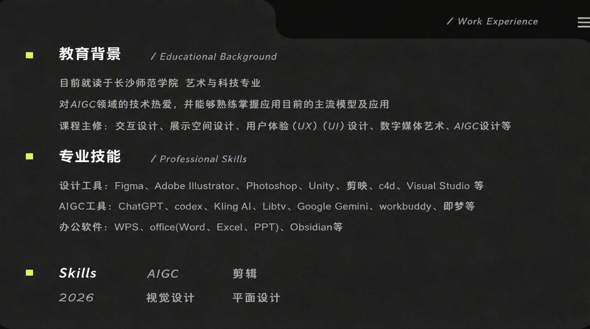
Profile
求职意向：AIGC 产品经理 / 策划 / 视频制作。现居长沙，具备导演思维、影像叙事、三维建模和产品设计能力，擅长把技术工具与创意思维结合。
Skill
独立完成脚本、角色与场景资产设计、AI 视频生成及全流程后期，覆盖短片、漫剧和音乐 MV。
具备镜头设计、氛围控制和影像叙事能力，能把主题、情绪和视觉风格统一到成片节奏中。
参与小程序产品设计与开发，覆盖智能排期、LBS 匹配、技能认证、云服务搭建和上线发布。
具备三维建模、角色/场景/道具制作、UI/UX 视觉延展和多软件协同能力。
Works
AIGC Comic Drama
作品以“迷失，寻找都市遗址”为主题，融合情感叙事与视觉美学。负责剧情脚本撰写、人物与场景资产设计、AI 视频生成和全流程后期制作。
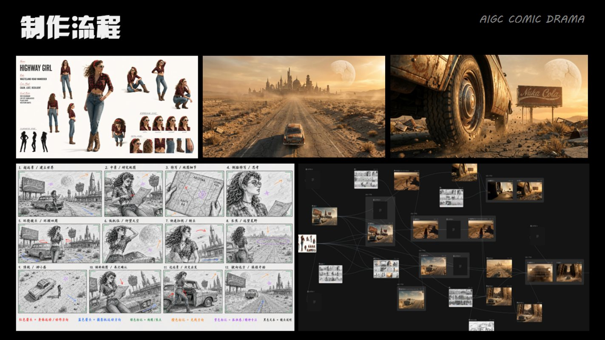
Agent & Editing
工作流把视频脚本、核心角色、场景描述、镜头生成、对口型、视频剪辑与配音组织成可复用流程，用于提升 AIGC 项目的产出效率和风格一致性。
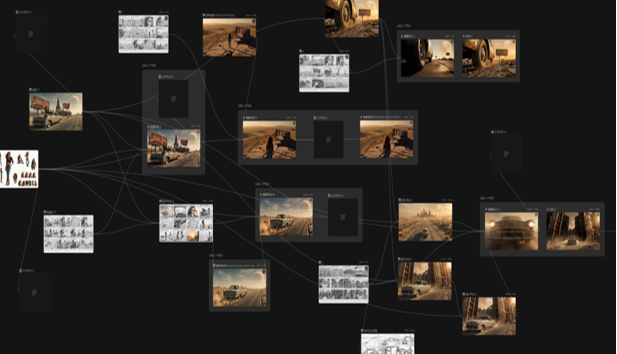
Music MV
以停运旧火车站为背景，演绎一段因误解分离七年后凭遗物探寻真相、完成情感和解的冬日爱情故事。整体氛围怀旧温情，强调遗憾、成全与释怀。
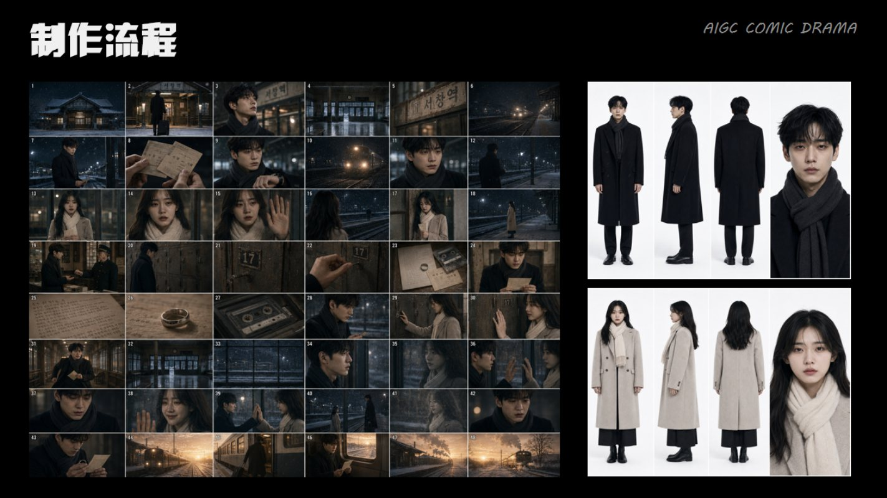
Agent & Editing
工作流把视频脚本、核心角色、场景描述、镜头生成、对口型、视频剪辑与配音组织成可复用流程，用于提升 AIGC 项目的产出效率和风格一致性。
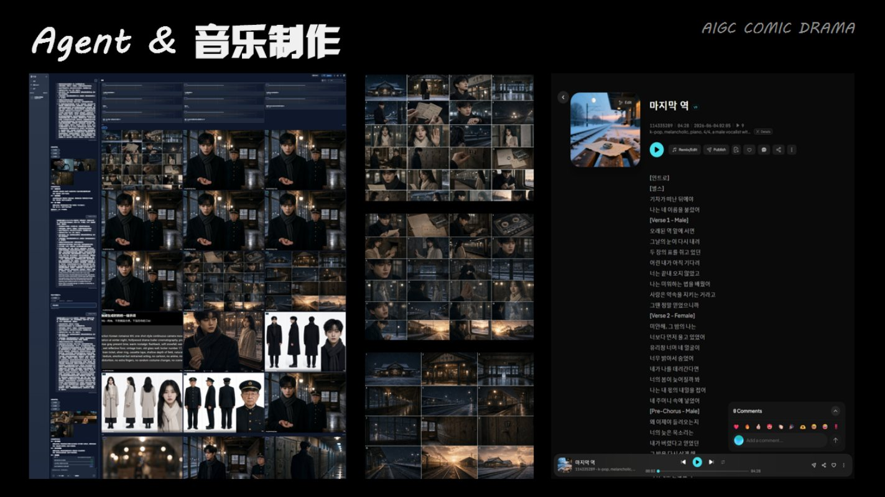
Video Editing
围绕《消失的城市》和《最后一站》的影像叙事，完成素材整理、节奏剪辑、字幕排版、声音设计与氛围包装，让画面生成结果最终形成连贯成片。
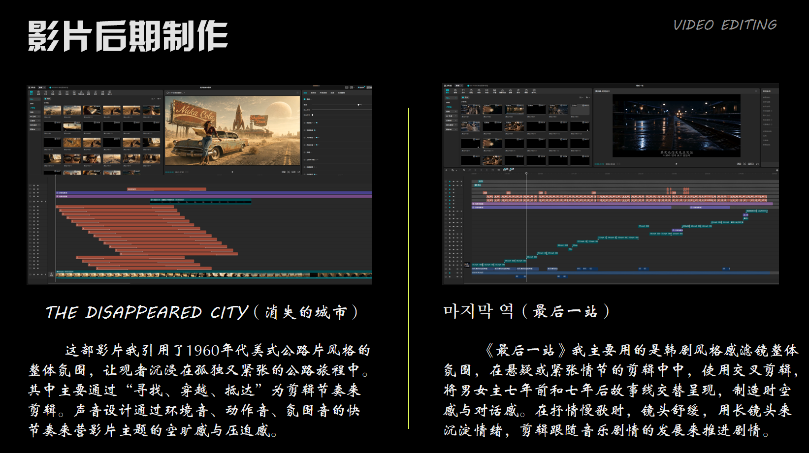
Product & UX
聚焦关爱自闭症儿童的使用场景，设计智能排期、LBS 匹配、技能认证系统，并完成阿里云服务器搭建、域名备案及小程序上架发布。
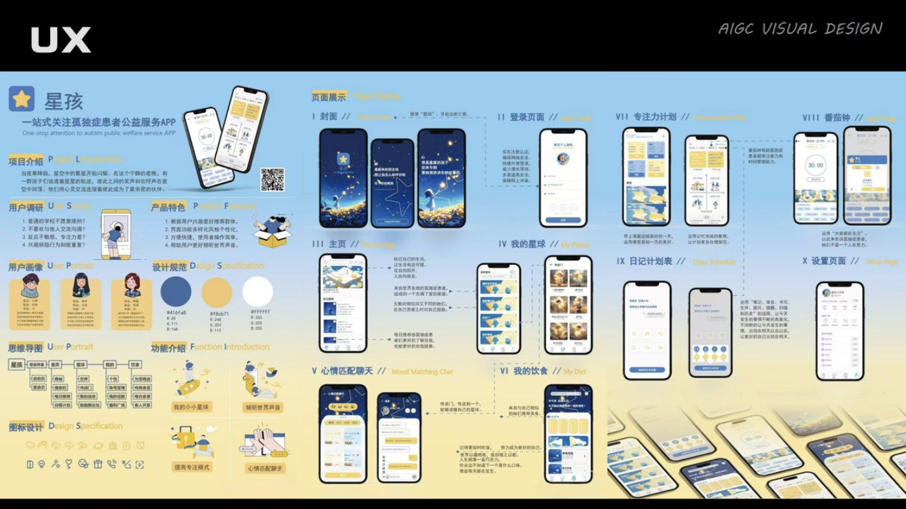
Experience
艺术与科技（本科） · 专业排名前 3%
产品设计与开发 · 校内推广运营 · 移动应用创新赛初赛资格
编导 / 视频制作 · 选题策划、脚本修改、AI 视频生成
艺术与科技专业，主修 AIGC 应用、AI 视频创作、跨媒介设计、虚拟现实、3D 动画设计等课程。
第十一届（2026）中国高校计算机大赛 - 移动应用创新赛，星孩小程序进入初赛。
大学英语四级、驾驶证 C1、计算机一级、NIT 全国计算机应用水平证书、普通话二级甲等。
Portfolio Pages
向右滑动翻阅
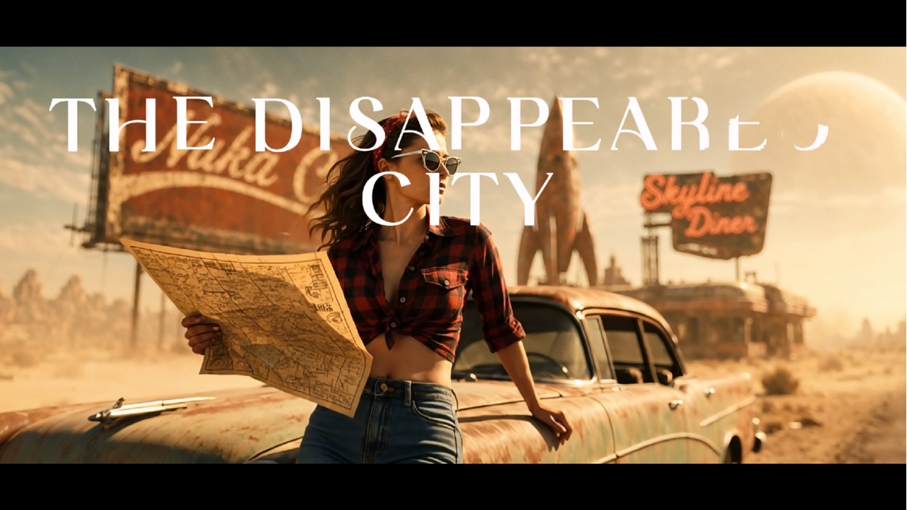
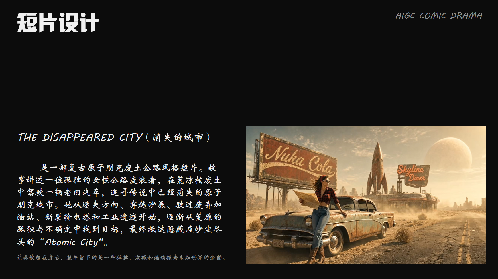
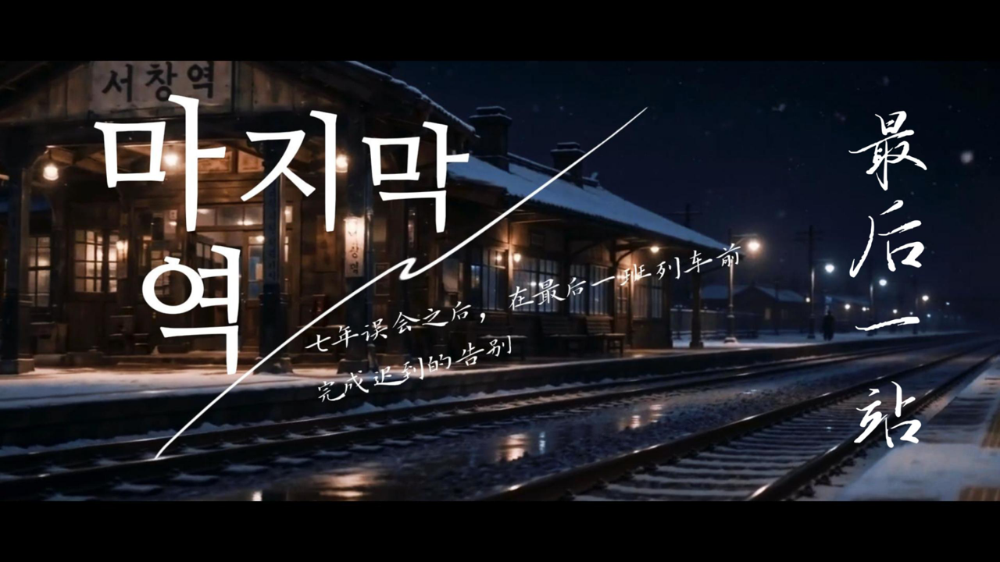
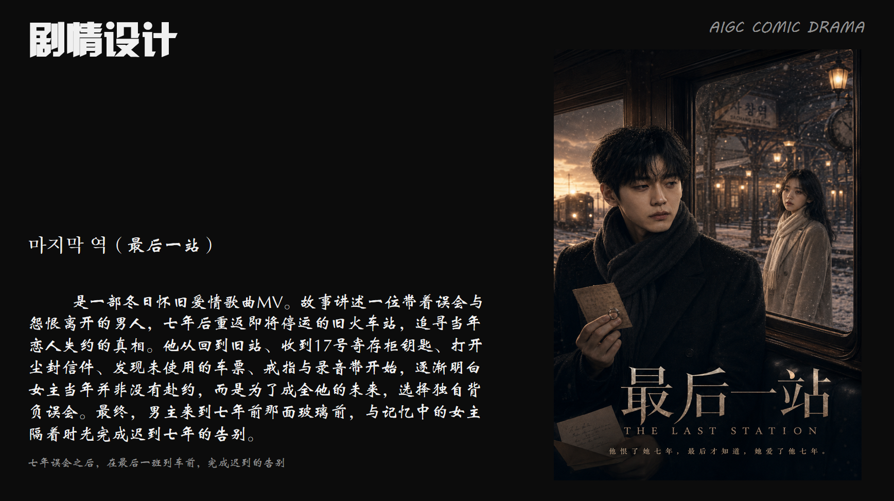

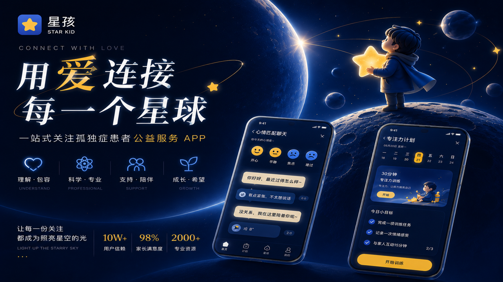
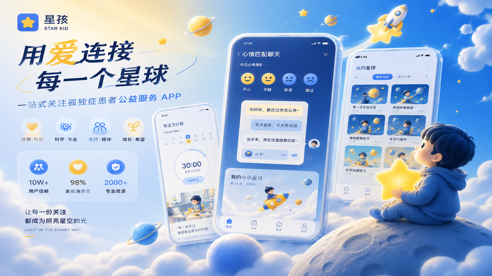
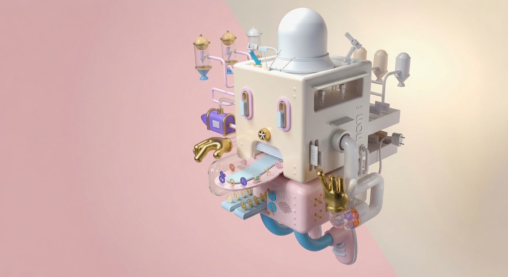